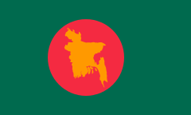
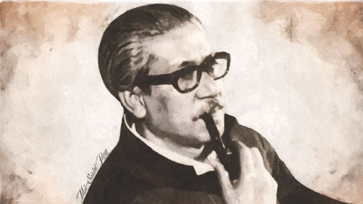
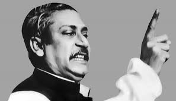

In the 1970 Pakistani general election under the military government of President Yahya Khan, the largest political party Awami League led by Sheikh Mujibur Rahman won a clear majority in East Pakistan national seats as well as provincial assembly. Zulfikar Ali Bhutto conspired with Yahya Khan and changed their position, refusing to hand over power to Sheikh Mujib.[1] Negotiations began but Sheikh Mujib was not trusted by the ruling west Pakistani leadership, having Agartala conspiracy case in vision. When it became clear that promises given earlier were not going to followed through, the whole nation of Bangla-speaking Muslims and Hindus of East Pakistan began a spirited struggle for independence, supported by Indian government. On 7 March 1971 Sheikh Mujib gave his famous speech at the Ramna Race course where he called for a non-cooperation movement
Authorities, mostly west Pakistani personnel rounded up Bangla-speaking armed forces officers, NCOs, and enlisted personnel. Forced disappearances went rampant. On the evening of 25 March in an interview with David Frost, Sheikh Mujib still called out openly for negotiation and a united Pakistan. That night the Pakistan Army spilled out to the streets killing and started Operation Searchlight.[3] It was official, they were not ready for a peaceful transfer of political power to the Awami League led by Sheikh Mujibur Rahman
 The Independence of Bangladesh was declared on 26 March 1971 by Sheikh Mujibur Rahman.Another declaration was read out on 27 March 1971, by Major Ziaur Rahman,on behalf of Sheikh Mujibur Rahman.[10] Major Zia (who was also a BDF Sector Commander of Sector 1 and later of Sector 11) raised an independent Z Force brigade.,[11] Chittagong and the guerilla struggle officially began.[2] The people of Bangladesh then took part in a war to get independence from Pakistan. Independence of Bangladesh was gained through a nine-month guerilla war against the Pakistan Army, and their collaborators including paramilitary Razakars which resulted in the death of about 3 million people, as per Awami league and Indian sources, in the Bangladesh War of Independence and Bangladesh Genocide.[12] The BDF, later with military support from India defeated the Pakistan Army ending the war on 16 December 1971 after the Surrender of Pakistan.
Facebook Twitter Github Contact